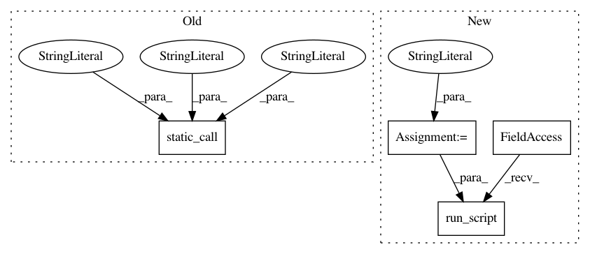

36df52d4dac4aa5ce188bb1b622c084b1c4d069f,imagej/windowmanager.py,,get_current_image,#,20
Before Change
returns a wrapped ImagePlus object
"""
imageplus_obj = J.static_call("ij/WindowManager","getCurrentImage",
"()Lij/ImagePlus;")
return get_imageplus_wrapper(imageplus_obj)
def get_id_list():
"""Get the list of IDs of open images"""
After Change
// Run this on the UI thread so its thread context is the same
// as the macro invocation
//
script =
new java.util.concurrent.Callable() {
call: function() {
return Packages.ij.WindowManager.getCurrentImage();
}
};
gci = J.make_future_task(J.run_script(script))
imageplus_obj = J.execute_future_in_main_thread(gci)
return get_imageplus_wrapper(imageplus_obj)
def get_id_list():
In pattern: SUPERPATTERN
Frequency: 3
Non-data size: 4
Instances
Project Name: CellProfiler/CellProfiler
Commit Name: 36df52d4dac4aa5ce188bb1b622c084b1c4d069f
Time: 2014-07-23
Author: leek@broadinstitute.org
File Name: imagej/windowmanager.py
Class Name:
Method Name: get_current_image
Project Name: CellProfiler/CellProfiler
Commit Name: 36df52d4dac4aa5ce188bb1b622c084b1c4d069f
Time: 2014-07-23
Author: leek@broadinstitute.org
File Name: imagej/windowmanager.py
Class Name:
Method Name: get_temp_current_image
Project Name: CellProfiler/CellProfiler
Commit Name: 36df52d4dac4aa5ce188bb1b622c084b1c4d069f
Time: 2014-07-23
Author: leek@broadinstitute.org
File Name: imagej/windowmanager.py
Class Name:
Method Name: set_temp_current_image